Eve — the base template
Face shape and artwork (r001, r002)
Eyes moved 3.1 mm toward the midline, the lower face narrowed toward the chin, the cheekbone brought forward so the far eye sits inside the outline at three-quarter, and the head normals rebuilt to remove a box-shaped edge round the face.

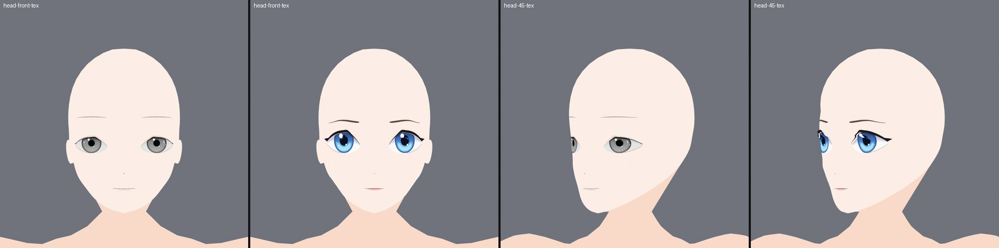
Eye shape and eyeliner (r003 to r013)
A new lid outline with a heavier upper lash band, a lower line and a crease. Four critic runs scored 6 to 6.5 against a target of 8; the user then reviewed r012 as good, and r013 fixed the hairline, the cheek marks and the brow controls.

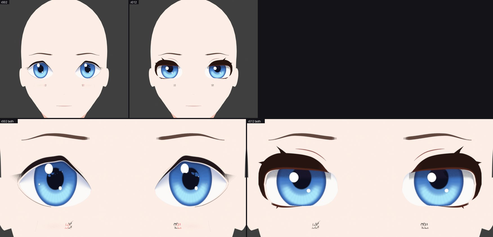

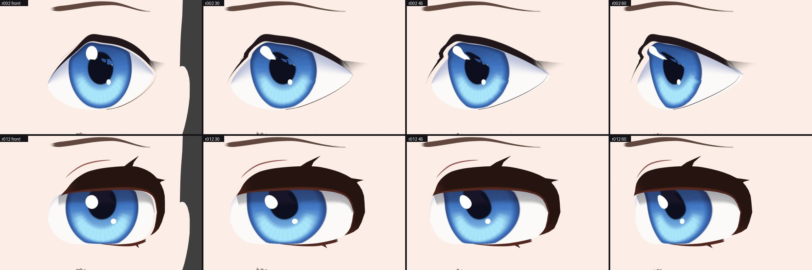

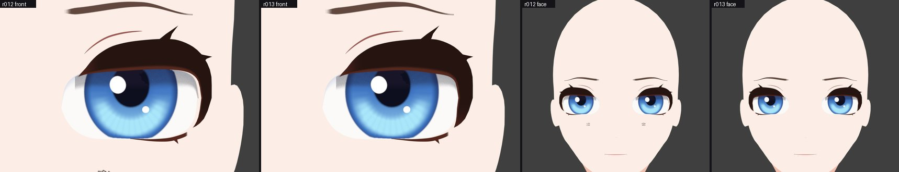
Head, start to now, and the first Unity captures (r021)
Expression strength, face shading and line, the neck and ears, and body normals were merged as r021, the first revision seen under the game shader.

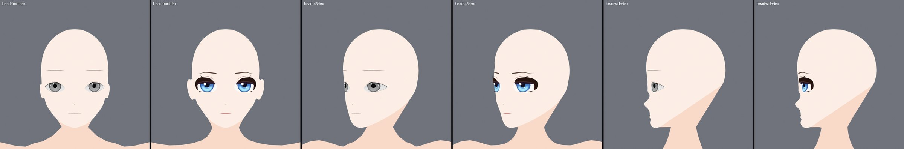

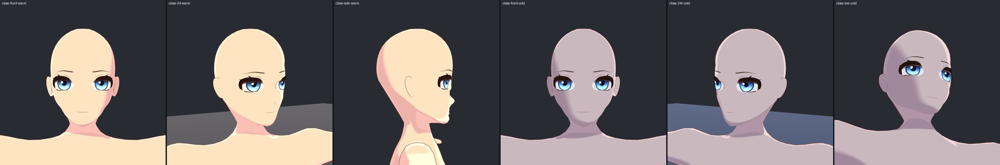

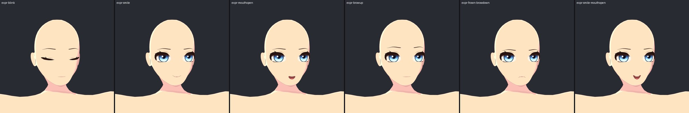
Feet with five modelled toes
The rounded toe mass was cut off each foot and replaced by five separate toes, so a barefoot adventurer is possible. Nails and creases were then painted on the body texture.

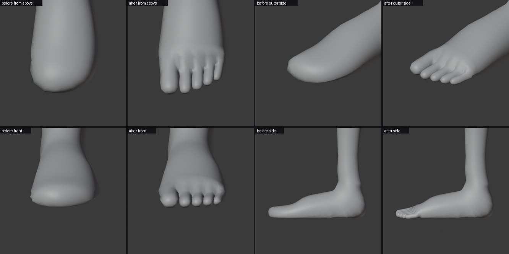

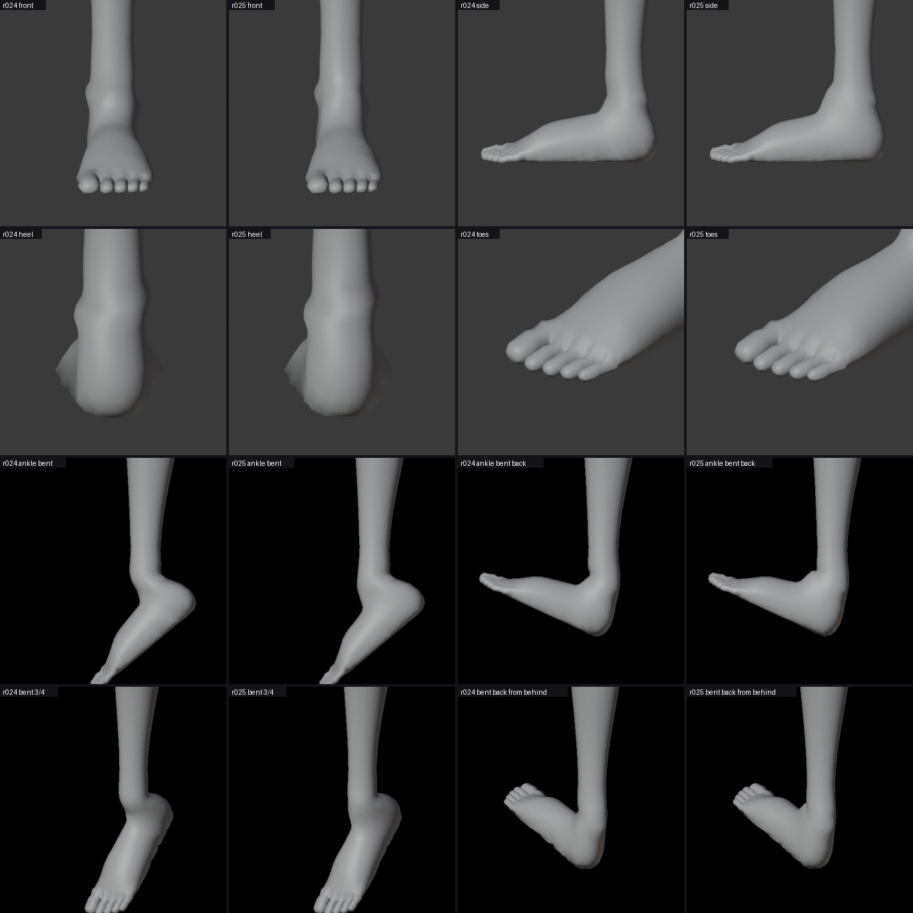
Undergarments, outfit, motions and a derivative (r032, r033, d002)
A sports-style top and boy shorts replace the old modesty meshes. Over them, a sleeveless shift. Eve also got a valid Humanoid avatar, placed UVs, an idle and a walk clip, and a taller derivative (1.656 m) that passes the same checks.

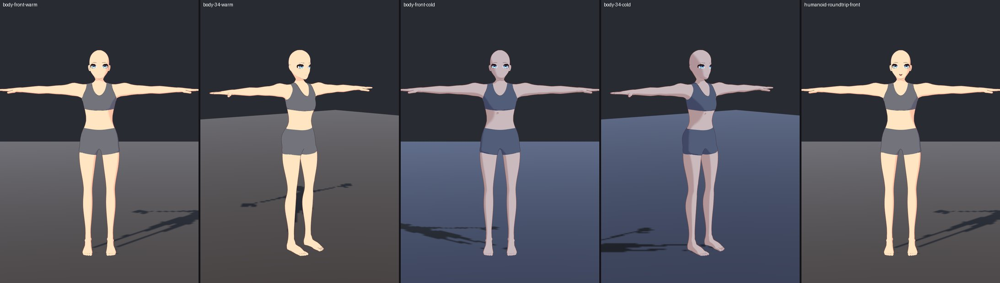

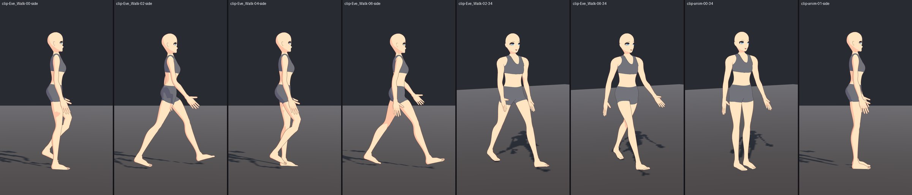

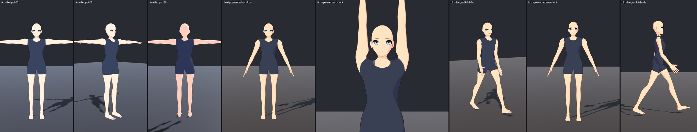
- At the time of this first pass the leg hems were slightly uneven and no player build had been run; both were dealt with in the later passes below.
Elastic bands, a planted walk, real playback and pose shapes (r034 to r064)
The five faults listed after the first pass were fixed or reduced. The undergarments got elastic bands at the waist, leg hems and under the bust, which evened out the hems, and the outfit got a belt. The walk now plants the feet and has a heel-to-toe roll, hip sway and twist. A built Windows player plays the idle and walk with real skinning (the first playback showed the feet sinking, fixed by baking root motion into the pose). Fourteen bend shapes are driven at run time, the shoulder and thumb have pose shapes, landmarks are painted on the body, and the hands and neck got new UVs.

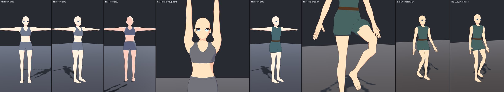

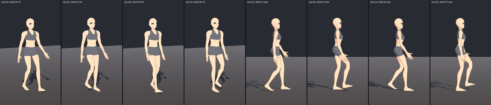

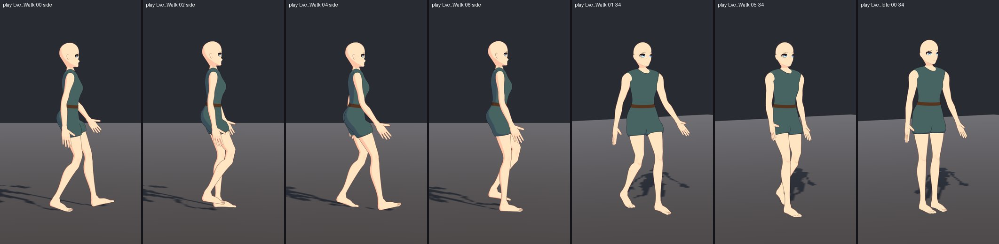

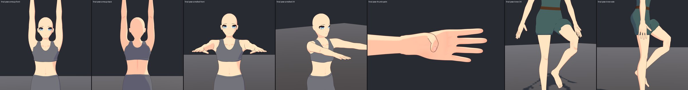
- Newest files: r063, r064 and the derivative d013. All Unity imports passed, and in the player the toe joint stays 26 to 33 mm above the floor through the walk.
- Still short: the shoulder-blade and elbow marks do not show, the thumb fold remains, and the arms-forward capture did not reach the intended pose. Author's inspection only; Eve is not declared frozen.
Enosh — the male template
Built by scripts from a copy of Eve, and rebuilt three times on 13 October. The first build was too broad in the torso. After male reference sheets were supplied, the shoulders, chest, waist and upper arms were retuned to them (shoulders about 2.6 face widths across, waist 1.3). A refinement pass then added painted body lines, a finer chin and a larger eye. The latest pass (t004) added triangles to the neck and evened out its skin weights, so it no longer pleats when the head turns, and rebuilt the closed eye and the outer end of the lash. Height 1.740 m against Eve's 1.593 m, 7.46 heads, the same 87 bones, 53,980 triangles against Eve's 52,304.

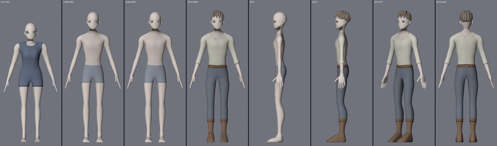

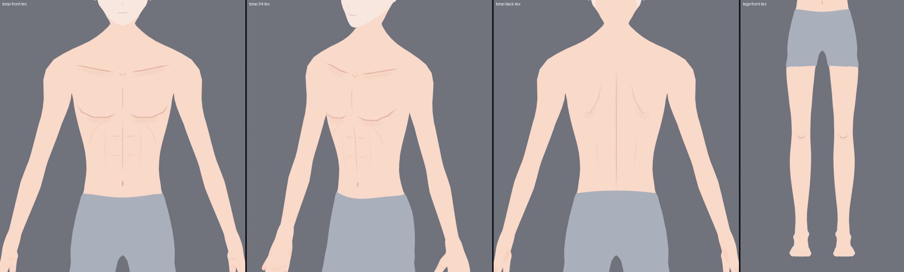

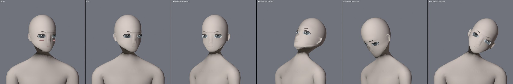

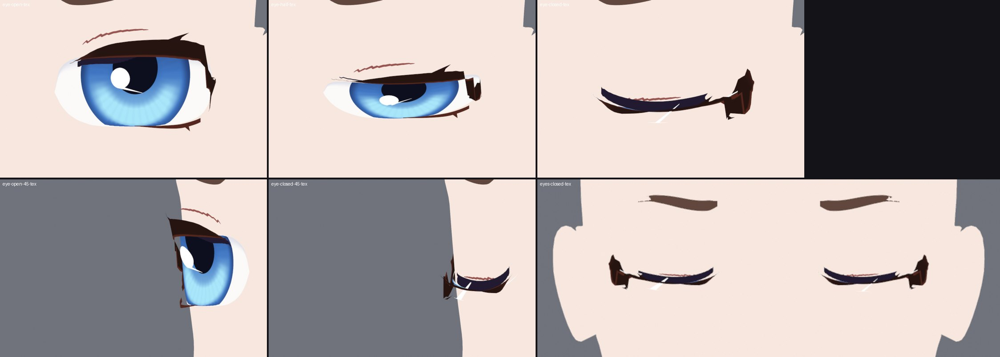

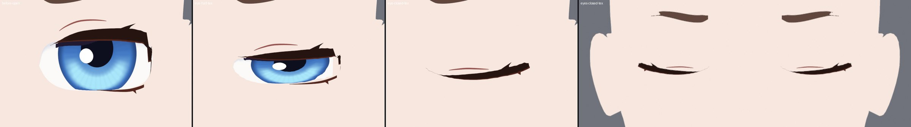

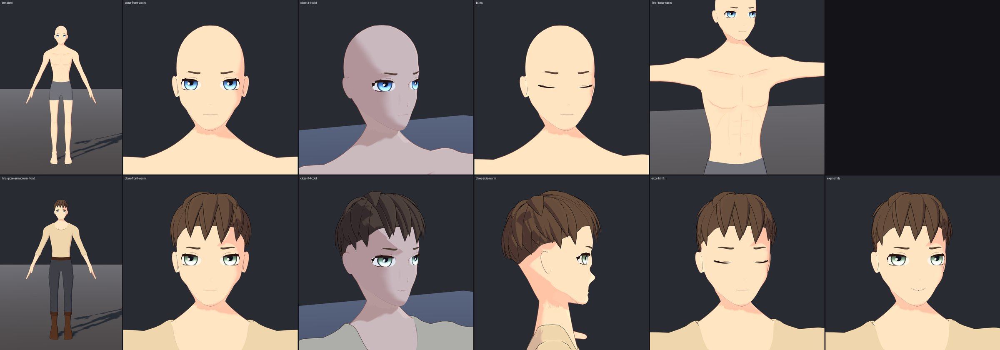
The male adventurer
The first character made on Enosh, a road-worn traveller: short layered ash-brown hair, grey-green eyes, cream shirt with a round collar, slate trousers, brown belt and cuffed boots. He is rebuilt on each new template by the same three scripts; the current one is a012. He passes his Unity Humanoid import and has a prefab with ten switchable parts.

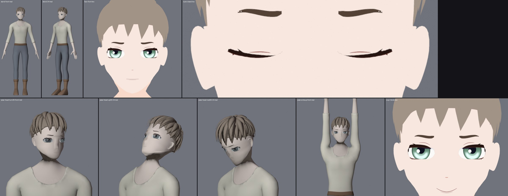
- Not approved yet; every pass is waiting for review, and the scores given along the way are the author's own.
- Still short: a ragged shade edge under the jaw, a hard shadow across the cheek in cold light, body lines that are paint and not form, a fringe that is an even row of spikes, boots that are plain wedges, a shirt with no folds.